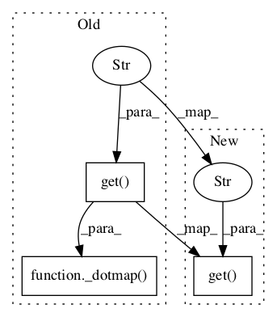

Pattern ID :64

Before Change
if isinstance(vnclass, basestring):
vnclass = self.vnclass(vnclass)
s = _dotmap(vnclass.get("ID")) + "\n"
s += self.pprint_subclasses(vnclass, indent=" ") + "\n"
s += self.pprint_members(vnclass, indent=" ") + "\n"
s += " Thematic roles:\n"
After Change
if isinstance(vnclass, basestring):
vnclass = self.vnclass(vnclass)
s = vnclass.get("ID") + "\n"
s += self.pprint_subclasses(vnclass, indent=" ") + "\n"
s += self.pprint_members(vnclass, indent=" ") + "\n"
s += " Thematic roles:\n"
In pattern: SUPERPATTERN
Frequency: 3
Non-data size: 3
Instances
Fragment ID: 102833
Project Name: nltk/nltk
Commit Name: b849eb666637457ac1136f34cdb8a6689b8da3fc
Time: 2008-07-31
Author: stevenbird1@gmail.com
File Name: nltk/corpus/reader/verbnet.py
Class Name: VerbnetCorpusReader
Method Name: pprint
Fragment ID: 102834
Project Name: nltk/nltk
Commit Name: b849eb666637457ac1136f34cdb8a6689b8da3fc
Time: 2008-07-31
Author: stevenbird1@gmail.com
File Name: nltk/corpus/reader/verbnet.py
Class Name: VerbnetCorpusReader
Method Name: vnclass
Fragment ID: 102841
Project Name: nltk/nltk
Commit Name: b849eb666637457ac1136f34cdb8a6689b8da3fc
Time: 2008-07-31
Author: stevenbird1@gmail.com
File Name: nltk/corpus/reader/verbnet.py
Class Name: VerbnetCorpusReader
Method Name: _index_helper